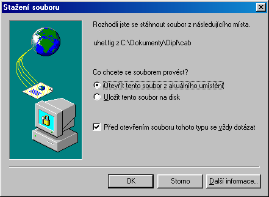

Jak pou�ívat pøíklady
z Cabri Geometrie v
MS Internet Exploreru
Obrázky, v jejich� levém horním rohu naleznete tento symbol  jsou pøíklady provedené v prostøedí Cabri Geometrie II.
jsou pøíklady provedené v prostøedí Cabri Geometrie II.
Pøedstavují soubory typu FIG, které se prohlí�ejí pøímo v programu Cabri.
Pøíklady se prohlí�ejí pohyblivé (tedy stoprocentnì vìrnì).
K zobrazení tìchto pøíkladù potøebujete mít nainstalován program Cabri Geometrie II pro Windows.
Pokud jej nemáte, mù�ete si ZDE
stáhnout z Internetu jeho demoverzi (verzi reader), která k prohlí�ení staèí.
Pro snadnìjší orientaci v programu si stáhnìte jeho èeskou verzi. Zde je k dispozici soubor Cesky.cgl, ktarı si ulo�te do stejné slo�ky, kam jste nainstalovali Cabri. Po prvním spuštìní Cabri kliknìte na nabídku Languages a zvolte jako soubor jazyka Cesky.cgl. Pøi ukonèení práce s programem si zvolte èeštinu jako implicitní jazyk a ukázky z vıuky se budou spouštìt ji� v èeském prostøedí.
Demoverze zabere asi 3MByte na pevném disku a funguje pod Windows 3.1 i pod Win95. (existují i verze
pro MacIntosh, DOSovská verze programu se však pro naše úèely nehodí)
Demoverzi je do Windows tøeba øádnì nainstalovat.
Spuštìní prohlí�ení
Najeïte ukazatelem myši na symbol Cabri a ve chvíli, kdy se kurzor zmìní v ruèku  a ve stavovém øádku prohlí�eèe se objeví :"Zobrazit v Cabri II"
na tento symbol kliknìte. Poté se otevøe pøipravenı FIG soubor v prograbu Cabri geometrie II.
Mù�e se také objevit toto dialogové okno.
a ve stavovém øádku prohlí�eèe se objeví :"Zobrazit v Cabri II"
na tento symbol kliknìte. Poté se otevøe pøipravenı FIG soubor v prograbu Cabri geometrie II.
Mù�e se také objevit toto dialogové okno.

Vyberte tedy polo�ku Otevøít - Open it.
Spustí se program Cabri geometrie II i s obrázkem (nestalo-li se, ètìte ZDE).
Nastavení velikosti okna
Pokud se Vám obrázek otevøel jako okno, maximalizujte jej pøes celou obrazovku  .
Pøitom se obrázek mù�e posunout, tak�e není vidìt celı. Pro opravu této
chybièky volte menu Soubor/Pùvodní obrázek a potvrdit Ano.
(s obrázkem lze té� pohybovat myší pøi stištìné klávese CTRL)
.
Pøitom se obrázek mù�e posunout, tak�e není vidìt celı. Pro opravu této
chybièky volte menu Soubor/Pùvodní obrázek a potvrdit Ano.
(s obrázkem lze té� pohybovat myší pøi stištìné klávese CTRL)
Po prohlédnutí pøíkladu zavøete okno Cabri  (pøitom volte Ulo�it / Ne).
(pøitom volte Ulo�it / Ne).
Potí�e pøi prohlí�ení obrázkù Cabri
Nefunguje-li prohlí�ení obrázkù, popsané vıše proveïte tyto operace:
- V dialogovém oknì " Sta�ení souboru " volte Ulo�it tento soubor na disk.
- Spus�te program pro práci se soubory (napø. Prùzkumník, Win Comander apod.)
- Poklepejte na ulo�enı FIG soubor.
Pokud se spustil program Cabri i s obrázkem, ale pøímo z programu "Vıuka geometrie 1.0" se stále nespouští,
problém bude nejspíše v nekorektní instalaci prohlí�eèe. Zkuste tedy pøeinstalovat Internet Explorer, popøípadì nainstalovat jeho novìjší verzi.
Program je odladìn pro verzi 4.0
Pokud se nespouští s obrázkem program Cabri II, nastaly mo�né chyby:
- Není správnì nainstalován program Cabri (jeho verze II pro Windows). Zkuste jej spustit, pøípadnì znovu nainstalovat.
- Windows nevìdí, kterım programem mají obrázek prohlédnout a kde se onen program nachází. Toto je tøeba nastavit.
Jiné chyby mù�e zpùsobovat chybnì nainstalovanı , nebo momentálnì nakonfigurovanı systém.
(Nìkdy pomù�e reset poèítaèe - zvláštì
kdy� pøíklady ji� døíve fungovaly. Nìkteré souèasnì spuštìné DOSovské programy
mohou bıt pøíèinou tìchto chyb)